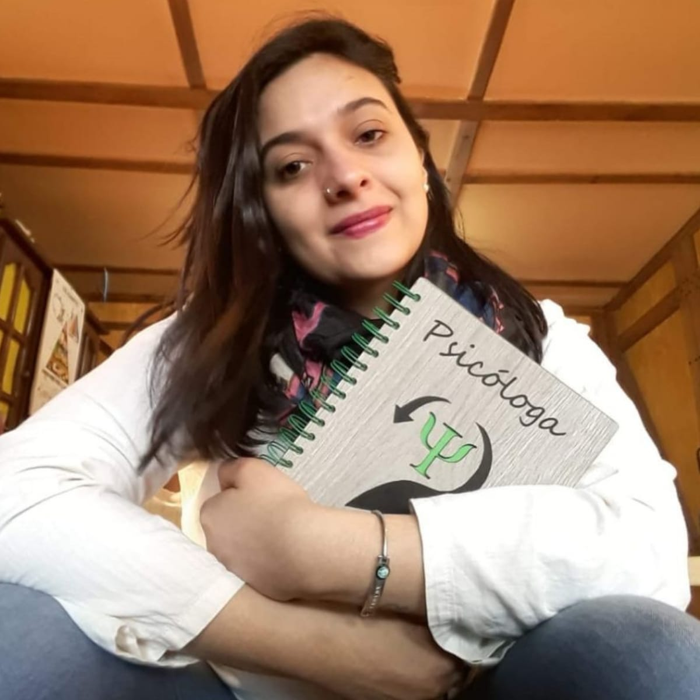
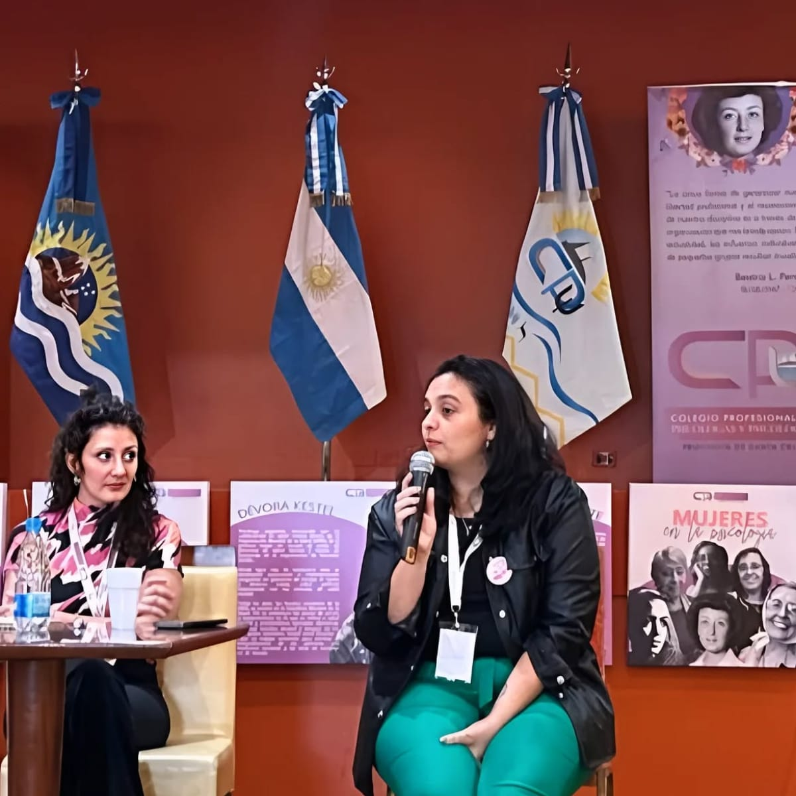
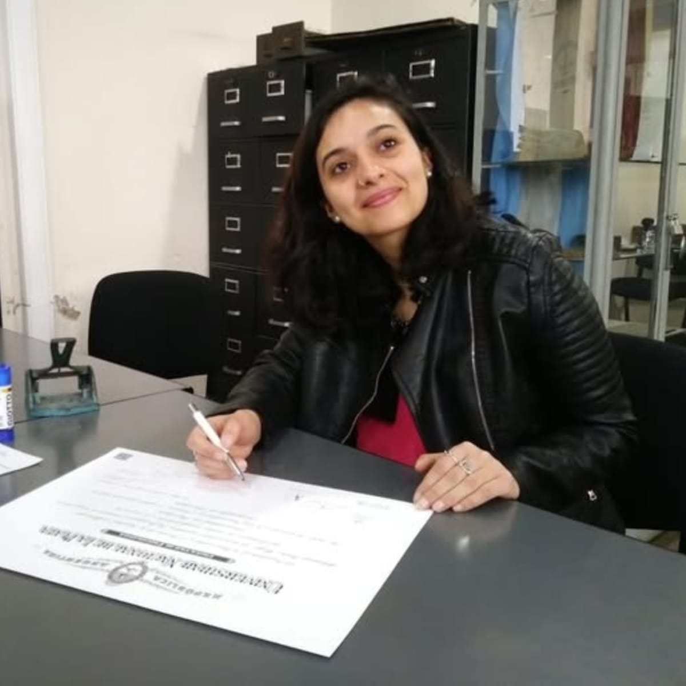

Lic. Adamna Mazú
DIPLOMADA POR LA ASOCIACIÓN ARGENTINA DE SALUD MENTAL
Más de 10 años de experiencia en intervenciones en contextos educativos y problemáticas complejas. Un enfoque cálido para acompañar tu bienestar.
- check_circle Atención a niños, adolescentes, adultos y familias
- location_on Presencial en Río Turbio y La Plata | Online en todo el país
BIENVENIDOS A MI ESPACIO

¿Por qué elegir este espacio?
Profesionalismo y calidez
Empatía real
Confidencialidad absoluta
Amplia experiencia
Experiencia de pacientes
 Opiniones reales en Google Maps
Opiniones reales en Google Maps
"Excelente profesionalismo y calidez. Me sentí muy cómoda desde la primera sesión."
"Un espacio de mucha ayuda real. Muy recomendable para momentos de crisis."
"Logró conectar muy rápido con mi hijo a través del juego y el dibujo."
Trabajo desde una combinación de:
- • Rigurosidad profesional
- • Escucha cercana
- • Intervenciones respetuosas
Sobre Mí
Soy Licenciada en Psicología por la Universidad Nacional de La Plata, con formación y trayectoria en el campo clínico, educativo y comunitario.
Mi trabajo se construye desde una mirada integral de la salud mental, entendiendo que cada persona, familia o institución necesita ser abordada en su contexto, su historia y sus vínculos.
A lo largo de mi recorrido profesional me especialicé en:
- • Violencia escolar
- • Conflictos familiares
- • Desarrollo infantil
- • Convivencia en instituciones educativas
He formado parte de equipos hospitalarios, proyectos de investigación y espacios de intervención en escuelas y comunidades. Actualmente continúo mi formación como candidata a Magíster en Psicología Educacional, profundizando el trabajo en infancia, familia y contextos educativos.
Autoridad Profesional
Formación
- • Licenciada en Psicología — Universidad Nacional de La Plata
- • Profesora de Psicología — UNLP
- • Diplomada en Psicología Infantil — Asociación Argentina de Salud Mental
- • Candidata a Magíster en Psicología Educacional
Experiencia
- • Atención clínica a niños, adolescentes y adultos
- • Trabajo con familias
- • Psicodiagnóstico y evaluaciones psicológicas
- • Psicóloga en Hospital SAMIC El Calafate
Investigación
- • Participación en proyectos de investigación en UNLP
- • Trabajo en extensión universitaria en escuelas
- • Participación en congresos nacionales e internacionales
- • Coautora de libro sobre convivencia y violencia en contextos educativos
Servicios
Atención clínica
Acompañamiento psicológico para:
- • Niños
- • Adolescentes
- • Adultos
- • Familias
Problemáticas que abordo:
- • Conducta infantil
- • Bullying
- • Violencia escolar
- • Conflictos familiares
- • Desarrollo infantil
- • Dificultades emocionales
Evaluaciones
- task_alt Psicodiagnóstico
- task_alt Informes psicológicos
- task_alt Psicofísicos laborales
- task_alt Evaluaciones para instituciones
Psicología jurídica y forense
Atención técnica y especializada en contextos judiciales y forenses.
Enfoque de Trabajo
Enfoque integral
No solo abordamos el síntoma, sino la totalidad del sujeto en su contexto.
Perspectiva psicoanalítica
Aportes de Silvia Bleichmar sobre la subjetividad.
Enfoque de derechos humanos
Intervenciones centradas en la protección y respeto integral.
Perspectiva socio-histórica
Marco teórico: Lev Vygotsky.
Encuadre profesional (Importante):
"La articulación con instituciones se realiza desde un posicionamiento clínico, resguardando la singularidad de cada caso y evitando la reducción del trabajo a la mera emisión de informes."
Intervenciones
Espacios de trabajo en instituciones educativas y comunitarias, orientados a la prevención, la intervención y la construcción de convivencia.


Pedir ayuda no siempre es fácil, pero es el primer paso para estar mejor.
Si estás atravesando una situación que te preocupa, puedo acompañarte en tu proceso.